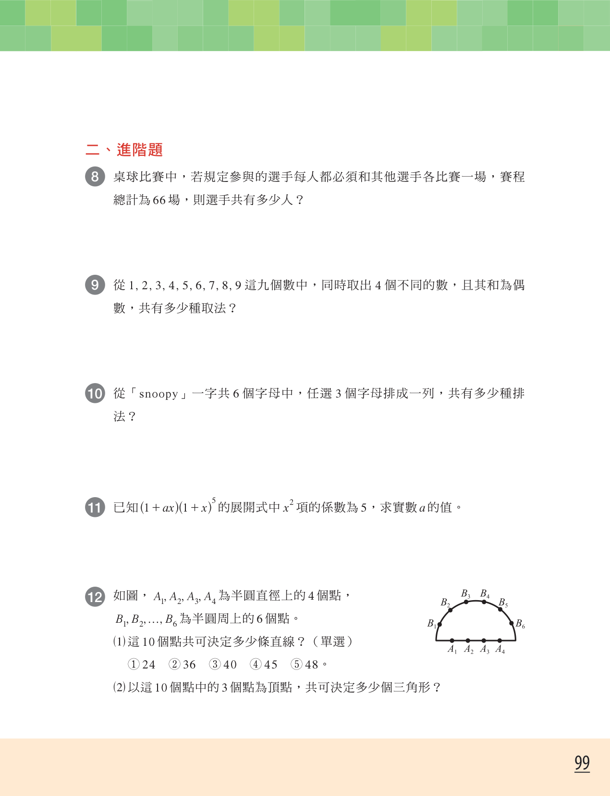
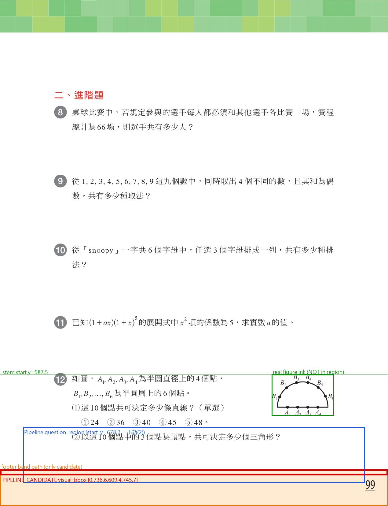
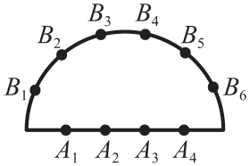

證據性質：new_isolated_readonly_trace；原始任務證據：original_evidence_unavailable。本頁不含教師提供之截圖。


Pipeline bbox 裁切（本調查以 crop_pdf_bbox 依該 bbox 渲染；Pipeline 本身未寫檔）：
NOT_GENERATED：分類為 skipped_low_confidence 後於裁切前 continue，無暫存或正式 PNG。
| 類別 | 物件 | bbox (pt) | 狀態 |
|---|---|---|---|
| PIPELINE_CANDIDATE | footer_band_path (page furniture) | [0.0, 736.58, 609.45, 745.7] | needs_review |
| NOT_A_PIPELINE_CANDIDATE | semicircle_path (real figure) | [435.9, 599.2, 515.2, 638.9] | — |
| COUNTERFACTUAL_ONLY (not pipeline output, not verified) | prototype ink cluster | [426.7, 588.0, 524.4, 652.1] | needs_review |
| INVESTIGATOR_PROPOSAL_PENDING_TEACHER (previous round, not system output) | [420, 575, 540, 675] | pending_teacher_confirmation |
The pipeline has no numeric visual confidence. match_score (0.99) is text-to-page confidence only; visual confidence is the categorical acceptance status (accepted / needs_review / rejected) from evaluate_visual_acceptance. _diagram_score is a ranking score among candidates.
{
"anchor_id": "general_2_section_advanced_exercise_012_037",
"source_order": 37,
"page": 16,
"page_verdict": "CORRECT (page 16)",
"match_method": "unique_phrase+order",
"match_score": 0.99,
"question_start_y_used": 678.2,
"chosen_phrase(longest hit)": {
"phrase": "2以這10個點中的3個點為頂點共可決定多少個三角",
"len": 24,
"on_matched_page": true,
"pages_with_phrase": 1,
"y_on_matched_page": 678.2
},
"phrase_table": "見 visual_pipeline_trace.json",
"question_number_glyph_12_y": 586.9,
"earliest_hit_y": 587.5,
"text_layer_first_sentence": "如圖AAAA1234為半圓直徑上的4個點BBB126f為半圓周上的6個點",
"docx_first_sentence_normalized": "如圖A1A2A3A4為半圓直徑上的4個點B1B2ldot...",
"y_verdict": "WRONG: y is taken from the LONGEST hit, which is sub-question (2) at y=678.2. First-sentence phrases miss because the PDF text layer emits base letters then subscripts (AAAA1234) and maps the ellipsis to 'f', while DOCX normalizes to A1A2A3A4 / ldot."
}
visual_assets = [] pdf_visual_status = VISUAL_REQUIRED_MISSING Stage 1 Gate blocker = required_figure_missing
NOT_PERFORMED：本輪未授權隔離關聯。
NONE：正式 DB Unit 5 現有 28 列，image_assets 合計 0；本調查前後內容指紋一致。

bbox [426.7, 588.0, 524.4, 652.1]；包含全部圖形墨跡=True；現行 Gate 判定 needs_review ['low_mapping_confidence']。